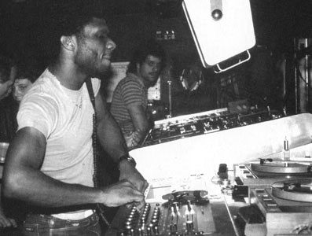
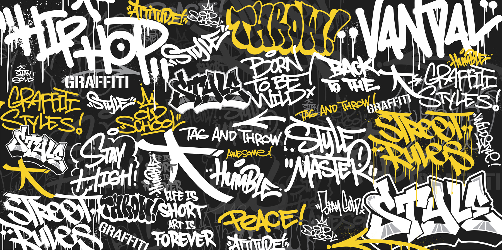

.png)
¡Bienvenidos a TRUE HIP-HOP! El rap es pasión, expresión y cultura. Ven y sumérgete en este mundo donde grandes ritmos te hacen mover el cuello y expresar realidades, sentimientos o vivencias que conectan con la gente. Este es tu espacio para descubrir música, conocer artistas de varios países, y juntos vivir la pasión por el RAP REAL.

La cultura del hip-hop nació en los barrios marginados de Nueva York, específicamente en el Bronx, durante la década de 1970. Su origen no puede entenderse únicamente como el surgimiento de un estilo musical, sino como un movimiento social, artístico y cultural que representó una respuesta creativa ante la pobreza, la violencia, la discriminación racial y la falta de oportunidades que enfrentaban principalmente las comunidades afroamericanas y latinas en ese momento. En un contexto de abandono institucional y crisis económica, los jóvenes encontraron en el hip-hop una vía de escape y, al mismo tiempo, un espacio de resistencia. El hip-hop pronto se consolidó como un espacio de comunidad: los “block parties” organizados en parques o esquinas de barrios neoyorquinos eran el lugar donde los jóvenes se reunían para bailar, improvisar y compartir. Estos encuentros fueron fundamentales para dar visibilidad al movimiento y para consolidar su carácter inclusivo, abierto a todo aquel que quisiera participar.
Con el paso del tiempo, lo que inició como un movimiento local en el Bronx trascendió fronteras. Durante los años 80 y 90, el hip-hop se expandió hacia otros estados de EE.UU. y posteriormente al mundo entero, convirtiéndose en una cultura global. Hoy en día, su influencia es evidente no solo en la música, sino también en la moda, el cine, la publicidad, el lenguaje cotidiano y hasta en el activismo social. Ya en diferentes países y contextos, el hip-hop ha servido como herramienta para visibilizar problemáticas locales, unir comunidades y ofrecer una plataforma a quienes no tenían voz en los espacios tradicionales. De esta manera, el hip-hop no es únicamente un género musical, sino un movimiento cultural vivo, dinámico y global, que ha demostrado su capacidad de reinventarse y mantenerse vigente, siempre fiel a sus raíces de resistencia, creatividad y búsqueda de identidad.
El hip-hop se compone de cuatro elementos principales:
1. MCing o Rap:
Un MC (Maestro de Ceremonias o Microphone Controller) es el anfitrión y la figura central en eventos de hip hop, responsable de presentar al DJ y animar al público. Históricamente, evolucionó para incluir el rapeo, y en el rap contemporáneo, MC y Rapero a menudo se usan indistintamente para referirse a la persona que rima sobre una base musical. Sin embargo, el término MC también puede denotar a un artista con habilidades superiores de rima, improvisación y conexión con la audiencia, mientras que "rapero" puede ser un término más general para cualquiera que interprete rap. |
2. DJing:Un DJ (disc jockey) selecciona, mezcla y reproduce música grabada para una audiencia, creando una atmósfera única en eventos como discotecas o bodas, y puede incluso componer sus propias mezclas musicales. Se utiliza equipo especializado, como tocadiscos o controladores digitales, y la habilidad para mezclar canciones de forma fluida y mantener el ritmo de la fiesta es clave.
DJ Legendarios dentro del hip hop |
3. Breakdance:
Como ya hemos adelantado, el break dance surgió como uno de los pilares de la cultura del hip-hop. Sucedió en los años 70 en el barrio neoyorquino del Bronx, donde las comunidades latina y afroamericana, como alternativa a la violencia, comenzaron a expresarse mediante distintas vías artísticas, como el baile, la música y la pintura callejera. El break dance se fue extendiendo por los barrios de Nueva York primero y por todo el planeta después, ganando cada vez más popularidad, sobre todo gracias a las películas Beat Street y Breakin’, que se estrenaron en los cines. El break dance se baila al ritmo de la música breakbeat, soul, funk y rap, y a día de hoy se ha convertido en un fenómeno global, tanto que será una modalidad deportiva en los Juegos Olímpicos de 2024 en París. |
4. Graffiti:El graffiti es un arte visual que consiste en realizar firmas, textos o composiciones pictóricas en el espacio público, se originó con inscripciones antiguas y evolucionó en el contexto de la cultura urbana. Desde una forma de protesta y de expresión de identidad hasta una expresión artística valorada en galerías, su práctica abarca desde el vandalismo hasta intervenciones artísticas legítimas. Vandalismo vs. arte: Existe una dualidad entre la percepción del graffiti como vandalismo, sobre todo cuando deteriora propiedades, y su consideración como una forma de arte legítima. A pesar de su carácter efímero y la ilegalidad en muchos casos, el graffiti ha ganado reconocimiento mundial, con artistas como Banksy alcanzando fama internacional. |